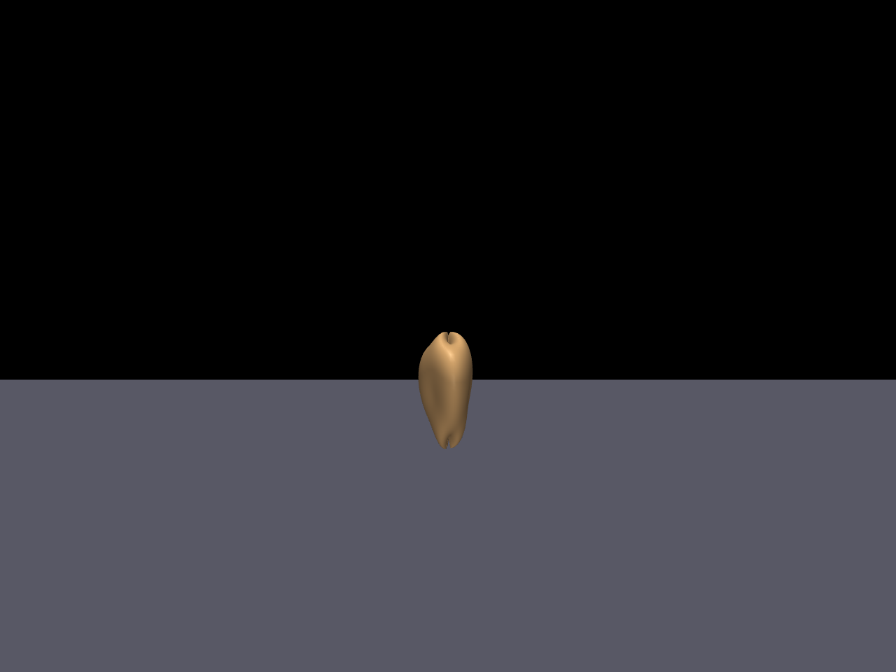
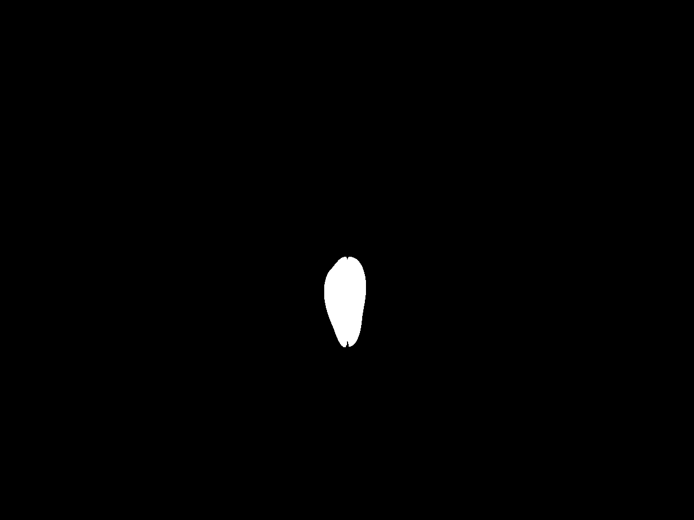
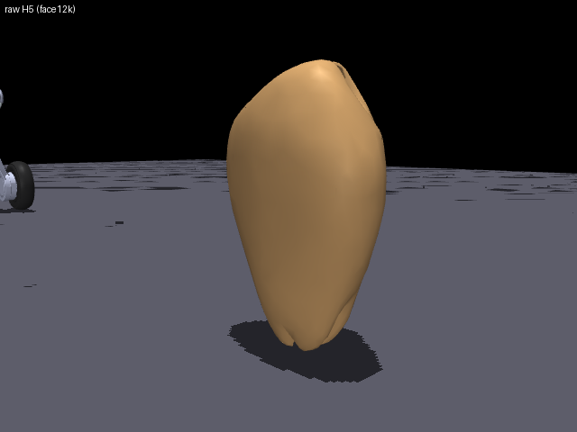
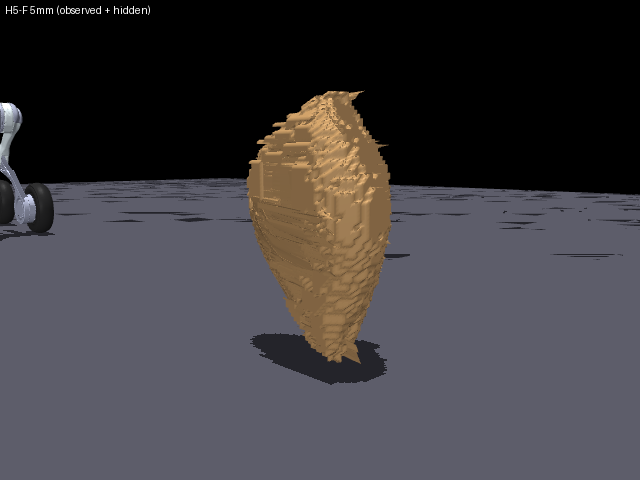
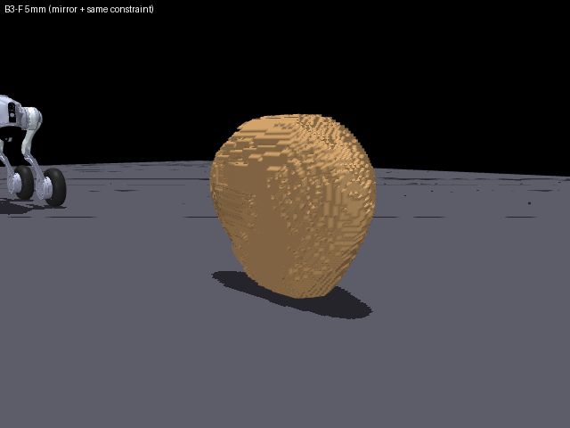
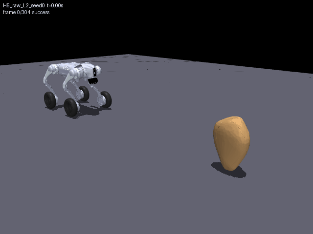
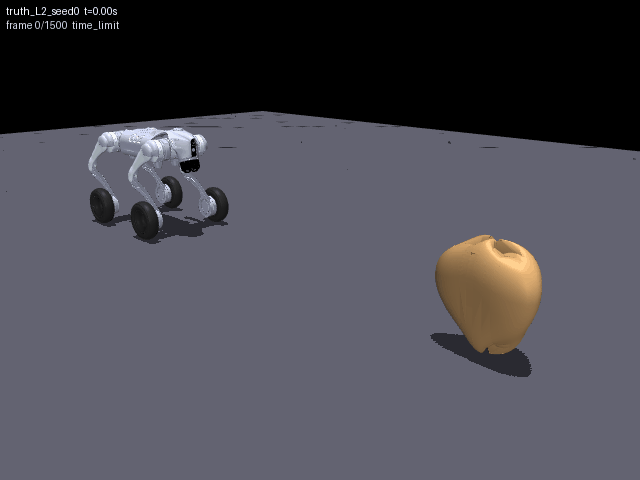

H5-F 是观测约束 + Lux3D 父候选隐藏几何，不是原始 Lux3D strict pass；可见面一致性部分由构造得到。 B3-F 用镜像先验 + 同一融合器。当前主案例 R01 的 H5-F 可见几何已过 strict。 输入=仿真 RGB-D 执行=独立仿真 不是真实机器人
收益、第二观察和最终比较必须以真实执行记录为准；页面不把预演动画冒称真值成功。


x_front = 1.6357 m
W_vis = 0.1558 m
H_vis = 0.3319 m
camera = (0.417, -0.000, 0.320)
observation = obs_R01
深度只用于可见面分割、位置/尺度；不把隐藏真值写入规划器。

真实 Lux3D 父候选；strict fail（P95 11.0 mm、freespace 0.5106）。

观测约束可见面 + 父候选 generated_hidden；可见几何 strict pass（m 值见下表）。

镜像先验不是 Lux3D；用来看“可见面处理相同，隐藏先验不同”的作用。
| method | IoU | P95 | freespace | watertight | hidden faces | status |
|---|---|---|---|---|---|---|
| H5-F 5 mm | 0.9475 | 2.82 mm | 0.0376 | true | ~49k | strict pass |
| H5-F 4 mm（收敛检查） | 0.9425 | 1.74 mm | 0.0375 | true | ~49k | strict pass |
| B3-F 5 mm | 0.9386 | 2.86 mm | 0.0463 | true | ~50k | strict pass |
| raw H5 | 0.8622 | 11.0 mm | 0.5106 | — | — | strict fail |
H5-F 可见面一致性由观测约束构造；hidden faces 表示输出中仍保留的父候选隐藏区域，不等于隐藏形状正确。B3-F 用同一融合器；0.0463 是当前通过值，不代表隐藏先验更好。

这是候选预演，不是独立真值成功；用于对照下一屏。

与候选预测相反：真值未在 30 s 内通过。
同初态下 S1 成功；V5 的 L2 选择被真值推翻。
L2: pred 3/3 · truth 2/3
S1: pred 3/3 · truth 3/3
false safe = 1 (L2 seed0)
pred rank L2 > S1
truth rank S1 > L2
0.3 s 的预测优势不足以支持 L2；V6 统一决策与验证初态后才可谈收益。
| 项 | 结果 | 说明 |
|---|---|---|
| 真正静态 | stable_ok=true，min_ncon=12 | brake_step 零轮速/制动保持，不是 env.step(零) 的 v_ref 驱动 |
| 公式下陷 | 9.75 mm | 该轮法向载荷/轮宽/轮径；Bekker 估计 |
| 实测轮底穿透 | −0.89 mm | 同一时刻轮底相对地面；几何下陷仍未实现 |
整机几何下陷仍是项目已知缺口；不把公式估计写成物理实现。
manifest：runs/unseen/delivery_v6/v6_20261029/manifest.json
融合：fusion/*/manifest.json · 预测误差：prediction_audit/prediction_audit.json
轨迹：media/trajectories/*.json · 验收：verify/